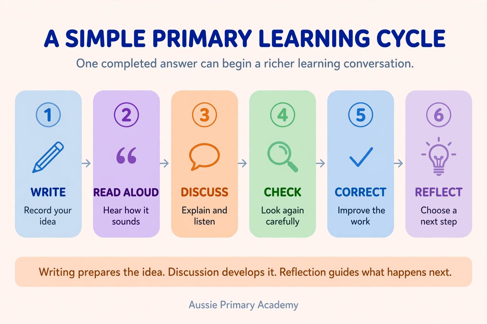
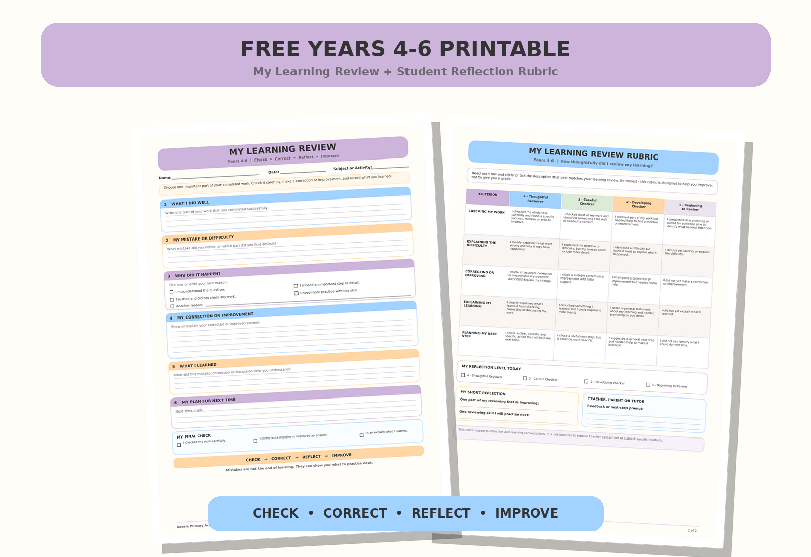

A student finishes a worksheet, places their pencil on the desk and says:
“I’m done.”
But is the learning really finished?
Completing a page shows that a student has attempted the task. It does not always show whether they understood the idea, noticed a mistake, considered another perspective or knew what to do differently next time.
Sometimes the most valuable learning happens after the writing is complete.
A child reads an answer aloud.
Another student asks a question.
The child explains their thinking.
Someone offers a different idea.
The student checks the work again, notices something important and makes a correction.
This simple process can turn an ordinary worksheet into a much richer learning experience.
Handwriting, speaking, listening, discussion, checking and reflection should not be treated as completely separate activities. When used together, they give students several ways to process an idea and develop greater responsibility for their learning.
A practical learning cycle could look like this:
This routine can be used in reading, writing, mathematics, spelling, science and many other primary learning areas.
A Worksheet Can Be the Beginning of Learning
Worksheets can provide useful structure and independent practice. They help students record answers, organise information and show what they know.
However, simply completing a worksheet does not guarantee understanding.
A child may:
- guess an answer
- copy a pattern without understanding it
- misunderstand the question
- make the same mistake several times
- complete the task quickly without thinking deeply
- receive a mark without understanding how to improve
Instead of treating the completed page as the end of the activity, teachers and parents can use it as the starting point for a short learning conversation.
Ask the student to choose one answer and explain:
“How did you work this out?”
“Why did you choose this answer?”
“Which part was difficult?”
“Is there another way to solve it?”
“Would you change anything after checking your work?”
These questions encourage students to move beyond finishing the task and begin thinking about their own learning.
Why Handwriting Still Has a Place in Primary Learning
Digital tools can be useful for research, creativity, accessibility and collaboration. However, children also benefit from regular opportunities to write, draw, label, calculate and organise ideas by hand.
Handwriting naturally slows the learning process. This is not always a disadvantage.
When students write by hand, they need to decide what to record, how to organise it and how to express the idea in their own words. They cannot always copy and paste information immediately. They must engage with the content.
Handwritten activities may include:
- recording a reading response
- solving a mathematics problem
- writing a short summary
- practising spelling words in meaningful sentences
- labelling a diagram
- planning a piece of writing
- listing important facts
- noting a question for discussion
- correcting an earlier answer
- reflecting on what was learned
The purpose is not to argue that handwriting is always better than technology.
The goal is balance.
Children need opportunities to use digital tools, but they also need time to think without constant notifications, animations, tabs or other distractions. A notebook, pencil and focused question can create a calm space for careful thinking.
Combine Writing With Speaking and Listening
Writing gives students time to organise their thoughts. Speaking gives them an opportunity to express those thoughts. Listening exposes them to ideas they may not have considered.
When these skills are combined, a simple activity can become more meaningful.
For example, after students write an answer, ask them to:
- Read the answer quietly to themselves.
- Share it with a partner.
- Explain why they chose that answer.
- Listen to their partner’s response.
- Add or change something if the discussion gives them a new idea.
The original writing gives every student something to contribute. This is especially useful for children who need thinking time before participating in a discussion.
Students are not being asked to speak without preparation. They can first record an idea and then use their writing to support what they say.
Ask Students to Read and Explain Their Work
Reading an answer aloud can help a student notice things that may be missed while writing.
A sentence might sound incomplete.
A spelling word might not look or sound right.
An explanation might be missing an important step.
A mathematics answer might be correct, but the student may find it difficult to explain the method.
Try asking:
“Please read your answer aloud.”
Then follow with:
“Can you explain that in another way?”
“What information helped you?”
“What steps did you follow?”
“How could you make your answer clearer?”
Explaining an answer requires more than recalling a fact. The student needs to organise the idea and communicate it so that another person can understand.
If a student cannot yet explain the answer, that does not automatically mean the answer is wrong. It may show that the student needs more time, vocabulary, modelling or support.
Use Discussion to Explore Different Answers
Not every valuable classroom question has only one possible response.
Two students may understand a character differently.
They may choose different evidence from a reading passage.
They may use different strategies to solve the same mathematics problem.
They may suggest different endings for a story or different solutions to a real-world problem.
These differences can become opportunities for learning.
After students write independently, ask:
“Did anyone answer this differently?”
“What makes you think that?”
“Which part of the text supports your idea?”
“Can both answers be reasonable?”
“Which strategy was most efficient?”
“Did another student’s explanation change your thinking?”
The aim is not to create an argument or decide whose idea is the “best” as quickly as possible.
Students are learning to:
- listen without interrupting
- explain their reasoning
- ask relevant questions
- use evidence
- compare approaches
- respectfully disagree
- reconsider an idea
- change an answer when new information is convincing
These are useful skills across the curriculum and beyond the classroom.
A Simple Classroom Learning Routine

Teachers do not need to create a long discussion after every worksheet.
Try this short routine with one important question or answer.
1. Write
Students complete the question independently.
This provides thinking time and helps every student prepare an idea before the discussion begins.
2. Read Aloud
Students read their answer to themselves, a partner or a small group.
They can check whether their answer is complete and understandable.
3. Explain
Ask students to explain how they reached the answer.
Useful prompts include:
“Why do you think that?”
“What clue helped you?”
“Which strategy did you use?”
“What happened first?”
4. Listen and Discuss
Students listen to another response and compare it with their own.
They might notice a different method, detail or interpretation.
5. Check and Correct
Students return to their original work.
They check for mistakes, missing information or parts that could be clearer.
6. Reflect
Finish with one short question:
“What did you learn?”
“What did you change?”
“What will you remember next time?”
This routine could take only a few minutes. It does not need to become a separate lesson.
Teach Years 4–6 Students to Review Their Own Work
By Years 4, 5 and 6, students can begin taking more responsibility for checking and improving their work.
Teacher feedback remains important, but older primary students should not always wait for an adult to find every mistake.
After completing a task, ask students to check their own work and create a short learning review.
The review could answer:
- What did I do well?
- Where did I make a mistake or become confused?
- Why might the mistake have happened?
- How did I correct it?
- What did I learn?
- What will I do differently next time?
This is more meaningful than simply writing:
“I got three answers wrong.”
A stronger reflection would be:
“I forgot to regroup when subtracting. I corrected the sum by checking each place-value column. Next time, I will check whether I need to regroup before writing my answer.”
The mistake becomes useful information.
The purpose is not to make students feel embarrassed about incorrect answers. It is to help them recognise patterns, select a strategy and become more independent learners.
A Simple Years 4–6 Review Cycle
Check
Look over the completed task carefully.
Find
Choose one success and one mistake or difficulty.
Explain
Describe why the mistake may have happened.
Correct
Show the corrected answer or improved version.
Reflect
Write what was learned and what to do next time.
How Self-Review Can Work Across Learning Areas
The same review process can be used in different subjects.
Mathematics
A student may discover that the final answer is incorrect because one step was missed.
They could write:
“I multiplied correctly, but I forgot to add the regrouped number. I corrected the calculation and will check each step next time.”
Students can also compare methods:
“My answer was correct, but my partner showed me a quicker strategy.”
This helps children understand that mathematics is not only about reaching an answer. It also involves choosing a method, checking steps and explaining reasoning.
Reading
After answering comprehension questions, a student may notice that an answer is based on personal opinion rather than information from the text.
They could write:
“I gave my opinion but did not include evidence. I added a detail from the second paragraph to support my answer.”
A reading review may focus on:
- the main idea
- important details
- vocabulary
- inference
- evidence from the text
- sequencing
- the author’s purpose
Spelling
Instead of copying a misspelled word several times without thinking, students can investigate the mistake.
Ask:
“Which part of the word was difficult?”
“Did you miss a sound, syllable or spelling pattern?”
“Is there a smaller word inside it?”
“What strategy will you use next time?”
A student might reflect:
“I wrote ‘seperate’ instead of ‘separate’. I need to remember that the middle syllable is ‘par’. I will say the word in syllables when I practise it.”
This connects spelling practice with noticing, explaining and selecting a strategy.
Writing
Students can reread their writing aloud and review one area at a time.
For example:
- Does every sentence make sense?
- Is the main idea clear?
- Have I included enough detail?
- Is the writing organised logically?
- Have I used paragraphs?
- Can I improve a repeated word?
- Have I checked punctuation and spelling?
A student may write:
“My ideas were clear, but I repeated the word ‘nice’ four times. I replaced it with more specific words.”
Self-review teaches students that the first draft does not need to be the final version.
Practical Discussion Ideas for Busy Classrooms
This approach does not require a complicated program or additional marking pile.
Teachers can use short routines such as:
Think, Write, Pair, Share
Students think about a question, write a short answer, explain it to a partner and then share an idea with the class.
Choose One Answer
Instead of discussing an entire worksheet, ask students to select one answer they found interesting, challenging or surprising.
Find and Fix
Include an incorrect example and ask students to find the mistake, correct it and explain why it was wrong.
Two Strategies
Invite two students to demonstrate different ways of solving the same problem.
Change Your Mind
After a discussion, allow students to revise an answer and explain what influenced the change.
Exit Reflection
Before leaving the lesson, students complete one sentence:
“Today I learned…”
“One mistake helped me understand…”
“Next time I will…”
A single well-chosen reflection can be more useful than a page of repetitive questions.
How Parents and Homeschool Families Can Use the Routine
This approach also works at home.
You do not need to recreate a classroom or ask children to complete a long oral presentation.
After a reading passage, spelling activity, writing task or set of mathematics questions, choose one part of the work.
Ask:
“Show me one part you feel proud of.”
“Was anything difficult?”
“Can you explain how you worked this out?”
“Did you notice a mistake when you checked?”
“What might help you next time?”
Give the child enough time to answer. Try not to correct every mistake immediately.
If the child notices and corrects a mistake independently, acknowledge the process:
“You checked that carefully and found the problem yourself.”
This focuses attention on the learning behaviour rather than only the final score.
What If a Child Does Not Want to Read Aloud?
Reading or speaking in front of the whole class can be uncomfortable for some students.
Children may be shy, still developing English, worried about making a mistake or experiencing a learning difficulty.
Participation should be supportive rather than humiliating.
Alternatives can include:
- reading quietly to a partner
- explaining the answer to the teacher
- sharing within a small group
- using notes or sentence starters
- allowing preparation time
- asking another person to read the written answer
- recording a private audio explanation when appropriate
- responding through a drawing, diagram or worked example
The purpose is to help students communicate their thinking—not to create unnecessary anxiety.
Don’t Turn Every Activity Into a Performance
Not every piece of work needs to be read aloud, discussed, corrected and reflected upon.
Children also need time for:
- quiet independent work
- creative exploration
- reading for enjoyment
- private writing
- practising a new skill
- working without constant interruption
- using technology meaningfully
Choose the moments where discussion or reflection will add genuine value.
One carefully discussed answer is often enough.
Balance makes the routine sustainable for teachers and prevents learning from feeling like a continuous test for students.
Does Self-Checking Replace Teacher Feedback?
No.
Students may not notice a misconception because they do not yet have the knowledge needed to identify it. They may also make an incorrect correction.
Teachers still need to model strategies, explain concepts, observe patterns and provide clear feedback.
Self-checking adds another layer to the process.
A balanced approach is:
- The student completes the task.
- The student checks and reflects.
- The teacher reviews the work and reflection.
- The student receives support or feedback.
- The student applies the feedback to a future task.
Over time, students can become more aware of their learning habits and more capable of asking for specific help.
Instead of saying:
“I don’t understand any of it.”
A student may begin to say:
“I understand how to multiply, but I become confused when I need to regroup.”
That is a valuable step towards independent learning.
Frequently Asked Questions
Should students read every answer aloud?
No. Select one answer that is important, challenging or open to different interpretations. Students can read to a partner or small group rather than presenting to the whole class.
How long should the discussion take?
A useful discussion may take only three to five minutes. The quality of the question matters more than the length of the conversation.
Can this approach be used in mathematics?
Yes. Students can explain their strategy, compare methods, identify an incorrect step and write what they will check next time.
Is this suitable for younger primary students?
Yes, but the reflection should be simpler. Younger children can use pictures, oral responses, emojis or sentence starters such as “I did well…” and “Next time I will…”
What if a student cannot identify their mistake?
Model the process with an example. Show how to compare an answer with success criteria, a worked example, a checklist or teacher feedback. Self-review is a skill that needs to be taught gradually.
Should spelling mistakes always be corrected?
Correction should match the purpose of the activity. If the lesson focuses on generating ideas, correcting every spelling error immediately may interrupt the child’s thinking. During spelling practice or editing, closer checking is more appropriate.
Can students change a correct answer after discussion?
Sometimes. Students need to understand that another answer is not automatically better. Encourage them to consider the evidence and explain why they kept or changed their original response.
My Learning Review: Years 4–6

A simple learning-review sheet can help students record:
- what they did well
- the mistake or difficulty they noticed
- why it may have happened
- the corrected answer
- what they learned
- what they will do next time
The same sheet can be used after mathematics, reading, spelling, writing, science or other classroom and homeschool activities.
The free two-page printable includes:
- a student learning-review worksheet
- space to identify a success, mistake or difficulty
- a correction and next-step section
- a student-friendly four-level reflection rubric
- space for teacher, parent or tutor feedback
Students can complete the review independently, discuss it with a partner or use it during a short teacher conference.
Print both A4 pages or use only the student worksheet when a shorter reflection is needed.
Final Thought
Learning does not always end when a worksheet is complete.
A child may understand an idea more clearly when they read it aloud.
They may notice a mistake when they explain their method.
They may consider a new perspective when they listen to another student.
They may become more independent when they check, correct and reflect on their own work.
Teachers and parents do not need to add a long activity to every lesson.
Begin with one completed answer and ask:
“Can you explain your thinking?”
Then give the child time to speak, listen, check and reflect.
That short conversation may be where some of the most important learning begins.